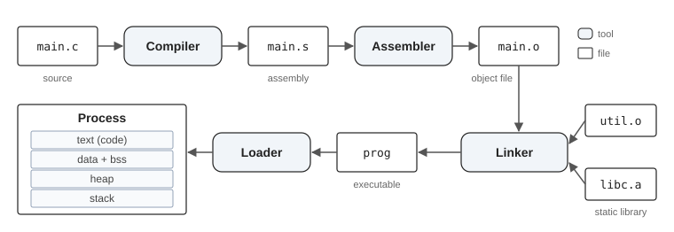
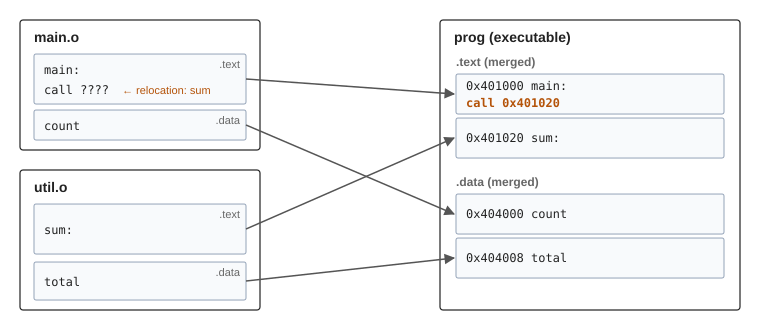
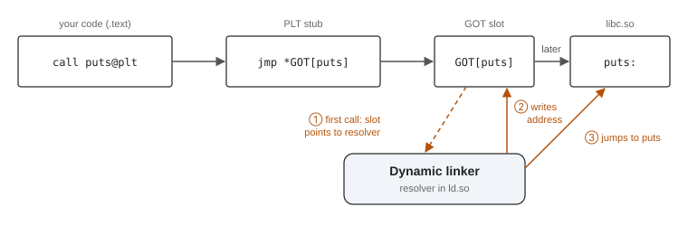

Between writing source code and seeing a running program, several tools do quiet but essential work. A compiler turns source into assembly, an assembler turns assembly into machine code, a linker stitches separately built pieces into one program, and a loader places that program in memory and starts it.
Most of the time a single command such as gcc main.c util.c -o prog runs all of these steps for you. Knowing what each step does explains error messages like undefined reference, shows why shared libraries exist, and makes the layout of a running process much less mysterious.
The examples use C, x86-64 assembly in NASM syntax and Linux’s ELF file format, but the ideas carry over to Windows (PE/COFF) and macOS (Mach-O).

| Stage | Input | Output | Key job |
|---|---|---|---|
| Compile | Source file (main.c) | Assembly (main.s) | Translate high-level constructs into instructions |
| Assemble | Assembly | Relocatable object file (main.o) | Encode instructions, build the symbol table, record relocations |
| Link | Object files and libraries | Executable or shared library | Resolve symbols, merge sections, assign addresses, patch references |
| Load | Executable | Running process | Map segments into memory, load shared libraries, jump to the entry point |
You can stop the pipeline at any stage to look at the intermediate files:
gcc -S main.c # stop after compiling: main.s
gcc -c main.c # stop after assembling: main.o
gcc main.o util.o -o prog # link
./prog # the shell asks the kernel to load and run itAssembly language is a readable spelling of a processor’s machine code. Each instruction usually maps to exactly one machine instruction, so the language is tied to one architecture: x86-64 assembly does not run on ARM. In exchange, it gives full control over registers, memory and individual instructions.
Anatomy of a Statement
A typical line has up to four fields, all of them optional:
loop: add rax, rbx ; label, mnemonic, operands, commentmov, add or jmp.; is ignored by the assembler.Kinds of Statements
| Kind | Produces machine code? | Examples |
|---|---|---|
| Instruction | Yes, one machine instruction | mov, add, call, syscall |
| Directive (pseudo-op) | No; it tells the assembler what to do | section, global, extern, db, equ |
| Macro | Expands into other statements | %macro print 1 … %endmacro |
A Complete Program
This program prints a line and exits using Linux system calls directly, with no C library:
section .data
msg: db "Linked and loaded!", 10 ; bytes of the text plus a newline
len: equ $ - msg ; assemble-time constant: the length
section .text
global _start ; export the entry point to the linker
_start:
mov rax, 1 ; system call 1 = write
mov rdi, 1 ; file descriptor 1 = stdout
mov rsi, msg ; address of the bytes
mov rdx, len ; how many bytes
syscall
mov rax, 60 ; system call 60 = exit
xor rdi, rdi ; exit status 0
syscallnasm -f elf64 hello.asm -o hello.o # assemble
ld hello.o -o hello # link
./hello # load and runNotice that mov rsi, msg needs the address of msg, but the assembler does not know where the linker will finally place the data section. It writes a placeholder and leaves a note, called a relocation, asking the linker to fill in the real address. This idea drives everything that follows.
When Assembly Is Worth It
| Good reasons | Costs |
|---|---|
| Learning how instructions, registers and memory really work | Much slower to write and read than a high-level language |
| Boot code, context switches and other code the compiler cannot express | Easy to break calling conventions or leave the stack unbalanced |
| Hot loops that need special instructions (SIMD, atomics) | Tied to one architecture |
| Reading compiler output while debugging or tuning performance | Modern compilers usually match or beat hand-written code |
Most of an assembler’s work is a table lookup: each mnemonic and operand combination has a fixed encoding. The hard part is symbols. A jump can refer to a label that appears later in the file (a forward reference), so when the assembler first meets jmp done it does not yet know where done is.
The assembler tracks the current address with a location counter, which starts at 0 for each section and grows by the size of every instruction or data item it emits.
Two-Pass Assembly
The classic answer to forward references is to read the source twice:
For example, take this fragment of a .text section, with the size in bytes of each instruction:
start: mov ecx, 10 ; 5 bytes
again: dec ecx ; 2 bytes
jz done ; 2 bytes, forward reference
jmp again ; 2 bytes, backward reference
done: ret ; 1 bytePass 1 produces this symbol table:
| Symbol | Section | Offset | How it was found |
|---|---|---|---|
start | .text | 0 | First line |
again | .text | 5 | After the 5-byte mov |
done | .text | 11 | 5 + 2 + 2 + 2 |
In pass 2, jz done can be encoded with a relative offset: the jump starts at 7, the next instruction is at 9, so the offset is 11 − 9 = 2.
One-Pass Assembly
A one-pass assembler emits code immediately. For a forward reference it writes a placeholder and adds the location to a list of fixups waiting on that symbol. When the label is finally defined, it goes back and patches every waiting location; this is called backpatching. It is faster and needs less memory, at the cost of more bookkeeping.
One complication on x86: a jump to a nearby label fits in 2 bytes, but a distant one needs 5 or 6. Until the target is known, the assembler cannot be sure of the size, so real assemblers either assume the long form or repeat passes until every size settles.
An object file is a relocatable container of machine code: everything is addressed relative to the start of its own sections, because its final position is not yet known. On Linux the format is ELF (Executable and Linkable Format).
| Part | Holds |
|---|---|
.text | Machine code |
.rodata | Read-only data, such as string literals and constant tables |
.data | Initialised global and static variables |
.bss | Zero-initialised globals; only the size is stored, not the bytes |
Symbol table (.symtab) | Every symbol this file defines or uses, with its section and offset |
Relocations (.rela.text, …) | Places in the code or data that must be patched once addresses are known |
Debug info (.debug_*) | Line numbers, types and variable names for debuggers (with -g) |
A Two-File Example
// util.c
int total = 0;
int sum(int a, int b) {
total += a + b;
return a + b;
}// main.c
#include <stdio.h>
int sum(int a, int b); // declared here, defined in util.c
int count = 3;
int main(void) {
printf("%d\n", sum(count, 4));
return 0;
}Compile both with gcc -c main.c util.c, then list the symbols in main.o with nm:
$ nm main.o
0000000000000000 D count
0000000000000000 T main
U printf
U sumT means defined in the text section, D defined in the data section, and U undefined: used here but defined somewhere else. Both defined symbols sit at offset 0 because each is the first thing in its own section. The undefined ones are the linker’s problem.
The relocation entries for main.o say where its code needs patching. Simplified, they look like this:
| Where in .text | Symbol | Kind of patch |
|---|---|---|
The load of count | count | PC-relative address of data |
The call to sum | sum | PC-relative call target |
The call to printf | printf | PC-relative call target, possibly via the PLT |
| The format string argument | .rodata | PC-relative address of read-only data |
Use objdump -d main.o to see the code with placeholders and readelf -r main.o to see the exact relocation records.
A static linker has two main jobs: symbol resolution (match every use of a name to exactly one definition) and relocation (choose final addresses and patch every reference to them).
.text sections into one, all .data into one, and so on.
Symbol Resolution Rules
| Situation | Result |
|---|---|
| One definition, any number of uses | All uses bind to that definition |
| Used but never defined | undefined reference to … |
| Two strong definitions (functions, initialised globals) | multiple definition of … |
| One strong and some weak definitions | The strong one wins |
static function or variable | Local to its file; invisible to the linker’s global table, so two files can each have their own |
Computing a Relocation
Each relocation entry names a symbol S, an addend A stored with the entry, and implies the address being patched, P. The two most common kinds are:
absolute = S + A, PC-relative = S + A - P
Suppose the linker places sum at S = 0x401020, and the 4-byte displacement field of the call in main ends up at P = 0x40100C. x86 measures a call from the next instruction, which starts 4 bytes after P, so the addend is A = -4:
0x401020 - 4 - 0x40100C = 0x10
At run time the CPU adds 0x10 to the address of the next instruction, 0x401010, and lands on 0x401020: exactly sum.
A static library (.a on Unix, .lib on Windows) is an archive of object files with an index. The linker does not copy the whole archive; it pulls in only the members that define a symbol that is still undefined.
ar rcs libutil.a util.o # build the archive
gcc main.o -L. -lutil -o prog # -lutil searches for libutil.aOrder matters. The GNU linker scans its inputs left to right and only searches an archive for symbols that are undefined at that point. gcc -lutil main.o fails because when libutil.a is scanned nothing needs sum yet. Put libraries after the objects that use them.
The loader copies the program into memory and starts it. How much work that takes depends on when final addresses are decided.
| Approach | When addresses are fixed | Trade-off |
|---|---|---|
| Absolute loading | At link time, for one specific memory location | Simplest, but the program can only run at that address |
| Relocatable loading | At load time: the loader adds the load address to every recorded relocation | Runs anywhere, but cannot move once loaded |
| Dynamic run-time loading | At every memory access, by hardware (a base register or virtual memory) | The program can be moved, swapped out and brought back elsewhere |
Modern systems use the third approach. With virtual memory every process gets its own address space, so the linker can place code at a conventional address and the memory management unit maps it to whatever physical frames are free.
What Happens on Linux When You Run ./prog
execveld-linux-x86-64.so.2. The kernel maps it and starts it first; it loads the shared libraries and performs their relocations._start, which sets up the C runtime and calls main.With static linking every program carries its own copy of the library code it uses. A shared library (.so on Linux, .dll on Windows, .dylib on macOS) is linked when the program is loaded or even later, so one copy on disk and in memory serves every program that uses it.
| Static linking | Dynamic linking | |
|---|---|---|
| Library code | Copied into each executable | One shared copy, mapped into each process |
| Executable size | Larger | Smaller |
| Library bug fix | Every program must be relinked | Update the library once |
| Start-up cost | None | Libraries are found and relocated at load time |
| Deployment | One self-contained file | The right library versions must be present |
Load-Time and Run-Time Linking
ldd prog), and the dynamic linker loads them all before main runs.dlopen and looks up functions with dlsym. This is how plug-in systems work.gcc -fPIC -shared util.c -o libutil.so # build a shared library
gcc main.c -L. -lutil -o prog # link against it
LD_LIBRARY_PATH=. ./prog # tell the loader where to find itPosition-Independent Code
A shared library can be mapped at a different address in every process, and its code pages are shared, so the loader cannot patch them per process. Instead the library is compiled as position-independent code (-fPIC): code reaches its own data with PC-relative addressing, and reaches symbols in other modules through a table of addresses, the Global Offset Table (GOT), which lives in writable data and can differ per process.
Lazy Binding with the PLT
A program may import hundreds of functions but call only a few. Calls to external functions go through small stubs in the Procedure Linkage Table (PLT), which jump through the function’s GOT slot. Initially that slot points to the dynamic linker’s resolver:

puts goes through the stub into the resolver.puts in libc.so and writes its address into the GOT slot.puts. Every later call goes through the same stub but now jumps straight to puts.Many distributions now resolve every symbol at start-up instead (-z now) and make the GOT read-only afterwards (full RELRO). This costs a little start-up time but stops attackers from overwriting GOT entries.
Java has no separate link step, but the JVM performs the same jobs, lazily and per class:
| Native toolchain | JVM equivalent |
|---|---|
| Object file | .class file |
| Symbol table with undefined symbols | Constant pool with symbolic references such as java/io/PrintStream.println |
| Library search path | Class path or module path |
| Loader | Class loader, which finds and reads the bytes of a class |
| Relocation and symbol resolution | Linking: verification, preparation, then resolution of symbolic references |
| Lazy binding through the PLT | References are typically resolved on first use |
| undefined reference at link time | NoClassDefFoundError or NoSuchMethodError at run time |
| Message | Stage | Usual cause |
|---|---|---|
| undefined reference to `sum' | Link | The defining object file or library was not passed to the linker, or libraries are in the wrong order |
| multiple definition of `count' | Link | A variable or function is defined in a header that several files include; define it once and declare it extern elsewhere |
| error while loading shared libraries: libutil.so: cannot open shared object file | Load | The library exists at build time but the dynamic linker cannot find it at run time; install it or set the search path |
| undefined symbol: … at run time | Load / dynamic link | The installed library version does not have the function the program was built against |
| relocation … can not be used when making a shared object; recompile with -fPIC | Link | Non-position-independent code was put into a shared library |
Useful Tools
| Command | Shows |
|---|---|
nm file.o | Defined and undefined symbols |
objdump -d file | Disassembled machine code |
readelf -S / -r / -l file | Sections, relocations, program headers |
ldd prog | Shared libraries a program needs and where they resolve |
LD_DEBUG=bindings ./prog | Each symbol the dynamic linker binds, as it happens |
| Term | Meaning |
|---|---|
| Assembler | Translates assembly language into machine code in an object file |
| Directive | An assembler instruction that produces no machine code, such as section or global |
| Location counter | The assembler’s running offset within the current section |
| Symbol table | Names defined or used by a module, with their locations |
| Relocation | A record of a place that must be patched once addresses are known; also the act of patching |
| Object file | Relocatable machine code plus symbols and relocations, not yet runnable |
| Linker | Combines object files and libraries into one executable or library |
| Static library | An archive of object files; needed members are copied in at link time |
| Shared library | A library linked at load or run time and shared between processes |
| Loader | Places an executable in memory and starts it |
| Dynamic linker | Loads shared libraries and resolves their symbols at load or run time |
| PIC | Position-independent code: runs correctly wherever it is loaded |
| GOT / PLT | Tables that let PIC reach external data and functions, with optional lazy binding |
Compilers produce pieces, linkers make them fit together, and loaders bring the result to life.